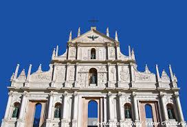
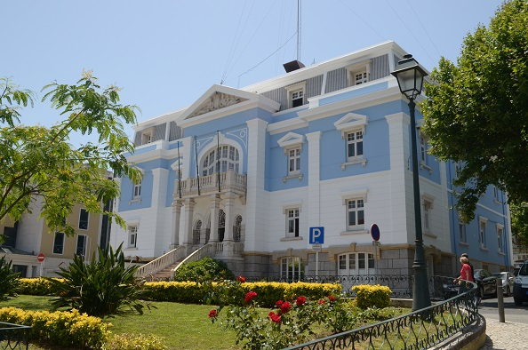
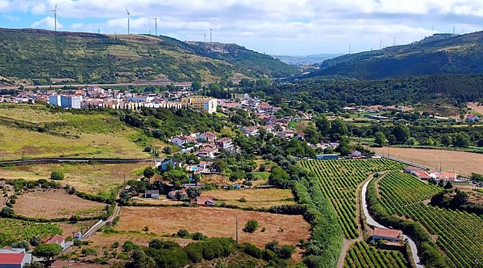
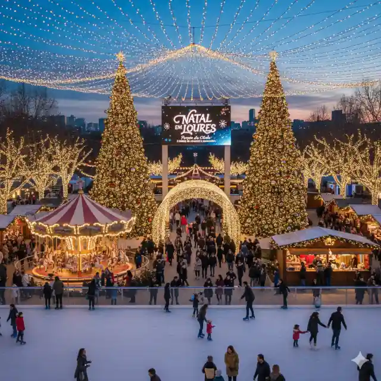

Multimédia
Nesta página poderá encontrar fotografias, vídeos e outros conteúdos multimédia sobre o concelho de Loures.
Nesta página poderá encontrar fotografias, vídeos e outros conteúdos multimédia sobre o concelho de Loures.

"Loures: Onde a tradição encontra o futuro."



Loures de encantos mil, berço de terra e tradição, Ergue-se altivo e belo no coração de quem cá passa, Entre vales verdejantes e o pulsar de uma grande nação, Guarda na sua história a força, a alma e a raça.
Do Tejo às colinas onde o vento vai soprar, Passa a memória antiga de um povo trabalhador, Nas quintas e searas que o sol vem beijar, Rescede a cultura com orgulho e fervor.
Terra de brisas doces e de feiras tradicionais, Loures brilha forte como um farol a guiar, Construindo o futuro sem esquecer os seus ais, Um lugar onde apraz sempre viver e sonhar.